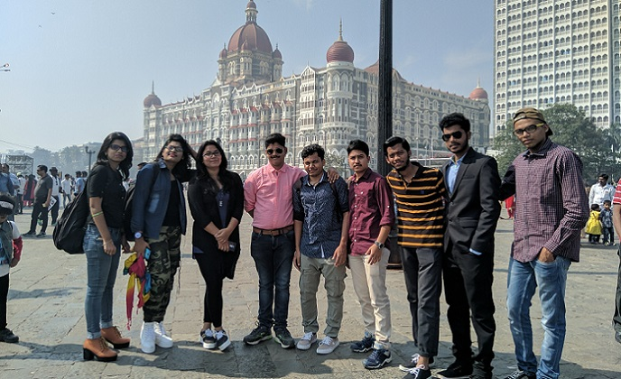

The Colourless Sky and Rainbow Water
We are a country with ups and downs. Since my birth in 1999 I’m aware of being this a developing nation. And still today we hold that tag. Many times I saw people discussing the national and international issues in tea stalls and I feel proud that we are in a country where everyone is excited to be a part of the democracy. After all we are a Democratic Republic and obviously after 1972 Socialist Democratic Republic. Here everyone has the right to vote, right to speak anything, right to do anything without fear.
When we say right to speak and do anything that means we are the type of nation where if you say against your country, then also you will bag support. Here you can destroy public property and harm public rights, just to protect your rights & name it a protest!
Then now the question arises, what is our duty as an Indian! Let's get back to the tea stall, where we discuss about the policies of the government. Amidst all the critical opinions over them, have we ever we tried out sending our suggestion to government? No! But why? Because we thought who will read or who cares but we forget that we are a country with 1 billion people & if 1% of them start sending emails and letters, then the entire government will be shaken to be honest! But the fact is we are really not interested about that policy or act actually, rather the focus us somewhere to kick some of the free hours we’ve got or to flaunt our general awareness in the social circles. And that's the naked truth.
Now-a-days we are in between a pandemic and the country is in trouble but our point of discussion is, whether Aarogya setu is a good app or bad. Does this even matter? We follow the agenda driven pseudo-intellectuals who don't know any topic in depth & they just put out their opinion as analysis on public domains. But did we ever try to visit a government site and search about the recent activities
People who are reading this post I guess 20% of them know that what is the official website of our country. It's sad but true! We want our children to learn coding but the truth is that we forget to teach them about General knowledge about government and democracy, isn’t so? So, a child who doesn't know what official website of his country is, we are forcing her/him to make a website or an app. Is it necessary? The fact is we are doing this to make our image bright in front of the society, never for the country
Many people ask: what the country is doing for us? Yes, it's true! But, is it correct? No, absolutely not. We need to understand that we are staying in rent on the lands, which we do not own. We do not own the road but still we use it and many more. We need to understand that we need to do for our country because we have more power than government because their vision changes with the leadership but our vision lasts long till the last breath. The day we start promoting our government policies rather than personal achievements, the day we start questioning our Govt about their activities, the day we stop browsing the fake intellectuals and the day we start analysing every news of the news channels, we all definitely would win as a nation, a great nation per se.
Now when we see our film industry we will realise how much we love our country. For example when we see a Hollywood movie, basically a superhero movie, they portrait White House as the power hub and their president as the world’s most powerful person but at the same time in Bollywood our superheroes are busy in romance with aliens! In Hollywood movies they show there real enemy as there reel enemy as well but in Bollywood our heroes are falling in love with enemy country's raw agent and happy to leave the country for them! May be it's not important but the fact in movie industry always set a narrative in people's mind about the facts and fictions and Bollywood is producing highest movie every year as compare to all other industries. But in India we are happy to promote personal agenda over the national agenda and that's the basic problem.
We happy to blame our culture in films but we never try to correct it. We always try to figure out the negative side of our country but never thought to bring some positivity. If you’ve seen the movie London has fallen (2016) and The accidental prime minister (2019), you will understand the difference that why American president is presented as a great statesman whereas the Indian Prime Minister is shown as a political party worker who have to work as PM to make his political party strong! This is the fact! The film industry makes huge impact on the common masses and in India the scenario is so much polluted that it's difficult to get a good movie anymore these days. And we realise that, only when a star like Sushant Singh Rajput is fallen and obviously after few days we forget that as well! And the government should also be conscious about all these because in USA they enable NASA and other locations for shooting of their films, but in India when we try to make movie like Mangalyan we need to create a set because of permission issues on real locations. Films are the powerful ways to enhance the perceptional values of a country and if we want to say The Great India, we need to make our mentality a Great one first!